Web page content
This year, there were 10 participants (ALIN, ALOD2Vec, AML, ATBox, DESKMatcher, Lily, LogMap, LogMapLt, VeeAlign and Wiktionary) that managed to generate meaningful output. These are the matchers that were submitted with the ability to run the Conference Track. We also provide comparison with tools that participated in previous years of OAEI in terms of the highest average F1-measure.
You can download a subset of all alignments for which there is a reference alignment. In this case we provide alignments as generated by the SEALS platform (afterwards we applied some tiny modifications which we explained below). Alignments are stored as it follows: SYSTEM-ontology1-ontology2.rdf.
Tools have been evaluated based on
We have three variants of crisp reference alignments (the confidence values for all matches are 1.0). They contain 21 alignments (test cases), which corresponds to the complete alignment space between 7 ontologies from the OntoFarm data set. This is a subset of all ontologies within this track (16) [4], see OntoFarm data set web page.
For each reference alignment we provide three evaluation variants
rar2 M3 is used as the main reference alignment for this year. It will also be used within the synthesis paper.
| ra1 | ra2 | rar2 | |
| M1 | ra1-M1 | ra2-M1 | rar2-M1 |
| M2 | ra1-M2 | ra2-M2 | rar2-M2 |
| M3 | ra1-M3 | ra2-M3 | rar2-M3 |
Regarding evaluation based on reference alignment, we first filtered out (from alignments generated using SEALS platform) all instance-to-any_entity and owl:Thing-to-any_entity correspondences prior to computing Precision/Recall/F1-measure/F2-measure/F0.5-measure because they are not contained in the reference alignment. In order to compute average Precision and Recall over all those alignments, we used absolute scores (i.e. we computed precision and recall using absolute scores of TP, FP, and FN across all 21 test cases). This corresponds to micro average precision and recall. Therefore, the resulting numbers can slightly differ with those computed by the SEALS platform (macro average precision and recall). Then, we computed F1-measure in a standard way. Finally, we found the highest average F1-measure with thresholding (if possible).
In order to provide some context for understanding matchers performance, we included two simple string-based matchers as baselines. StringEquiv (before it was called Baseline1) is a string matcher based on string equality applied on local names of entities which were lowercased before (this baseline was also used within anatomy track 2012) and edna (string editing distance matcher) was adopted from benchmark track (wrt. performance it is very similar to the previously used baseline2).
In the tables below, there are results of all 10 tools with regard to all combinations of evaluation variants with crisp reference alignments. There are precision, recall, F1-measure, F2-measure and F0.5-measure computed for the threshold that provides the highest average F1-measure computed for each matcher. F1-measure is the harmonic mean of precision and recall. F2-measure (for beta=2) weights recall higher than precision and F0.5-measure (for beta=0.5) weights precision higher than recall.
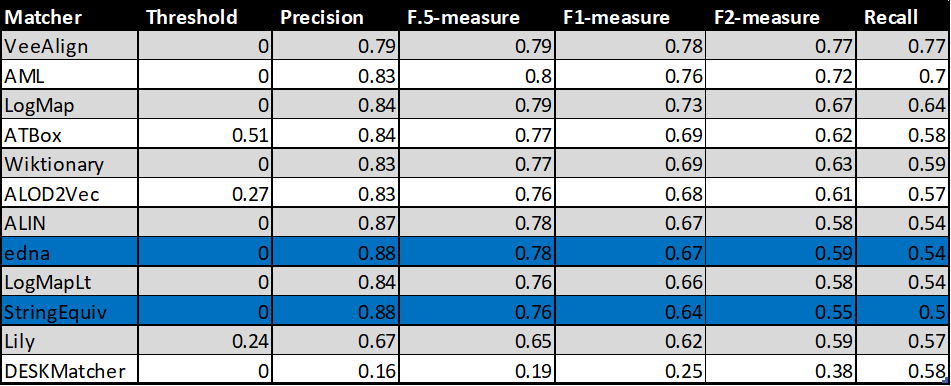
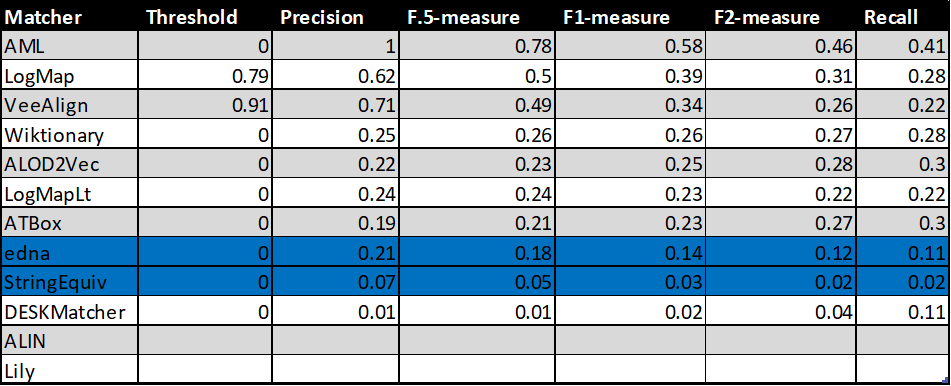
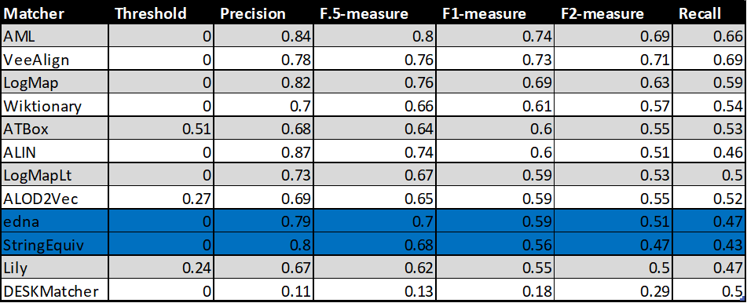
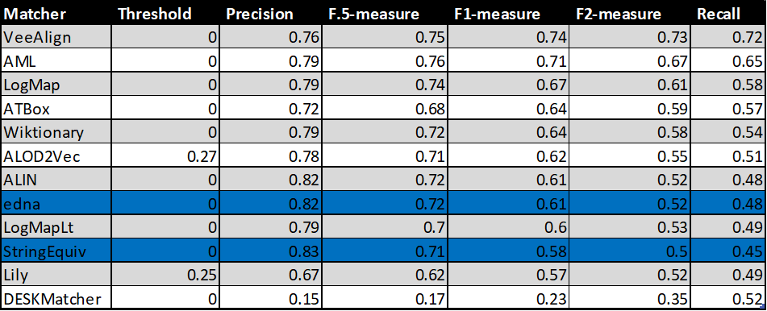
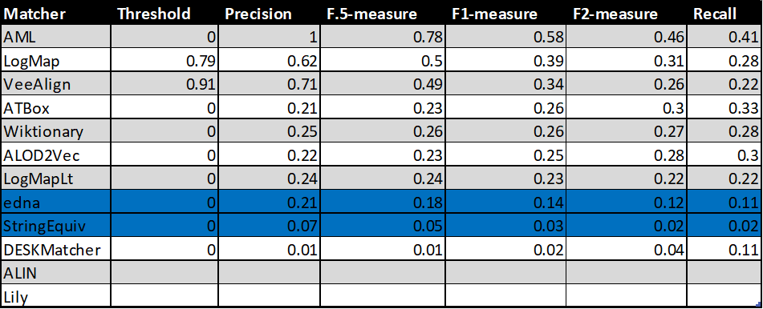
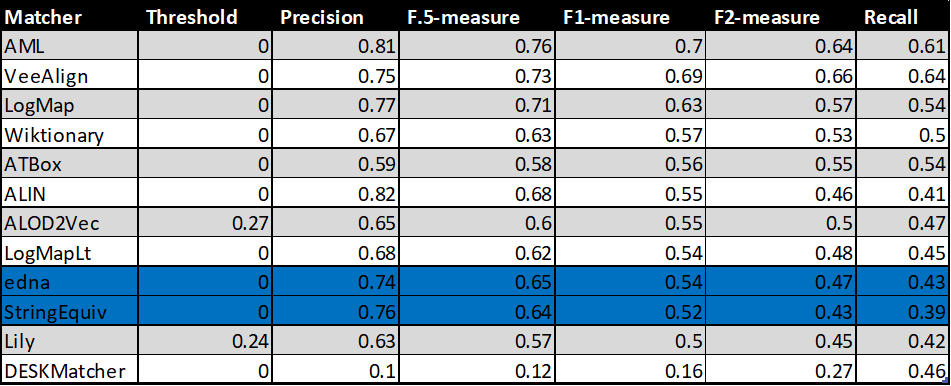
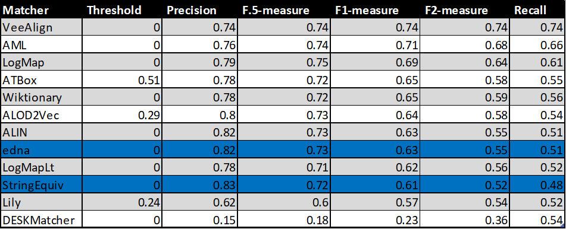
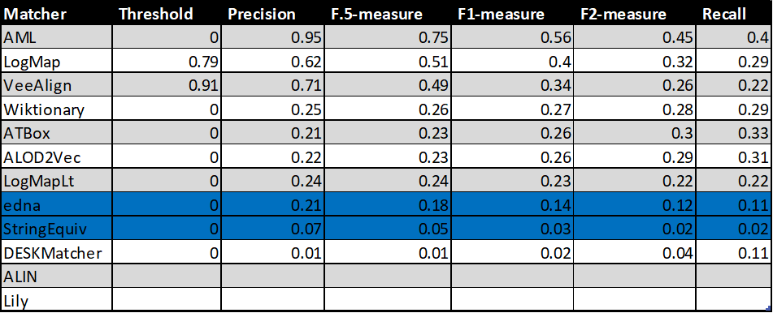
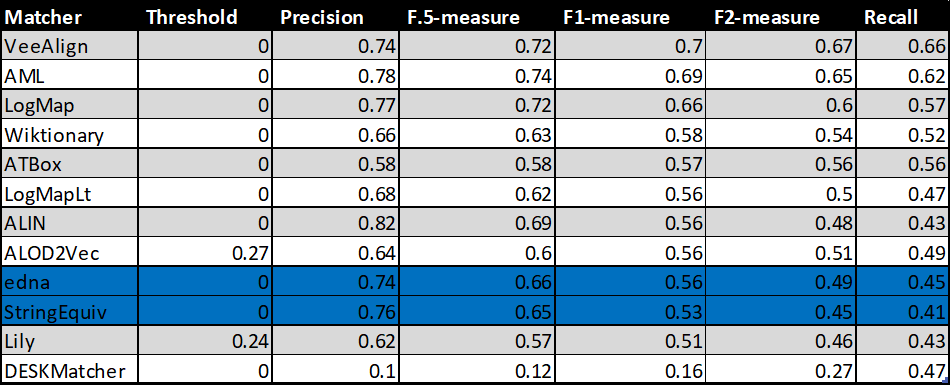
Table below summarizes performance results of tools that participated in the last 2 years of OAEI Conference track with regard to reference alignment rar2.
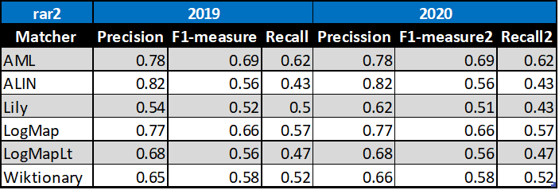
Based on this evaluation, we can see that four of the matching tools did not change the results, one very slightly improved (Wiktionary) and one very slightly improved its precision but decreased its recall and F1-measure (Lily).
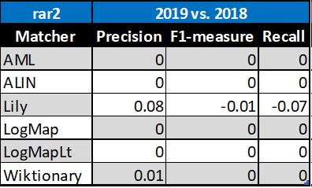
All tools are visualized in terms of their performance regarding an average F1-measure in the figure below. Tools are represented as squares or triangles. Baselines are represented as circles. Horizontal line depicts level of precision/recall while values of average F1-measure are depicted by areas bordered by corresponding lines F1-measure=0.[5|6|7].
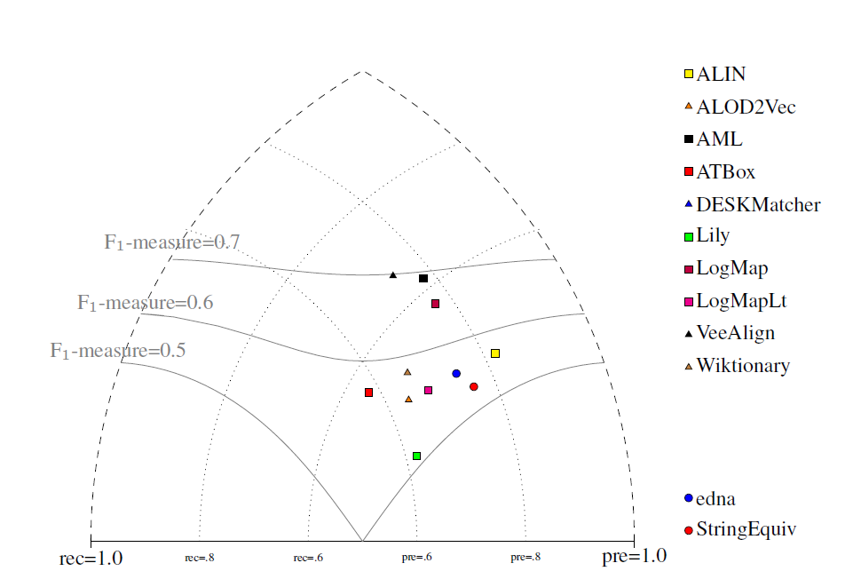
With regard to two baselines we can group tools according to matcher's position (above best edna baseline, above StringEquiv baseline, below StringEquiv baseline). Regarding tools position, there are slight differences between ra1-M3, rar2-M3 and ra2-M3. These differences concern 1) VeeAlign which moved from the 2nd position in ra1-M3 and ra2-M3 to the 1st position ahead of AML in rar-M3, and 2) ALIN, ALOD2Vec and LogMapLt and their 5th, 6th or 7th position. However, all of these systems (within 1 and 2) performed very closely or equaly compared to each other, and remaind "above best edna baseline" the whole time. In ra1-M3, ra2-M3 and rar2-M3, there are eight matchers above edna baseline (ALIN, AML, ALOD2Vec, ATBox, LogMap, LogMapLt, VeeAlign and Wiktionary) and two matchers below StringEquiv baseline (DESKMatcher, Lily). Since rar2 is not only consistency violation free (as ra2) but also conservativity violation free, we consider the rar2 as main reference alignment for this year. It will also be used within the synthesis paper.
Based on the evaluation variants M1 and M2, two matchers (ALIN and Lily) do not match properties at all. Naturally, this has a negative effect on overall tools performance within the M3 evaluation variant.
Additionally, we analysed the False Positives (FPs) - alignments discovered by the tools which were evaluated as incorrect. The list of the False Positives can be viewed here in the following structure: entity / concept 1 (C1), entity / concept 2 (C2), reason why the alignment was discovered (Why Found) - only for a subset introduced later in this section, number of tools that returned the mapping (Tools) and individual tools - if the alignment was discovered by the tool, it is marked with an "x".
We looked at the reasons why an alignment was discovered from a general point of view, and defined 4 reasons why they could have been chosen.
Why was an alignment discovered:
The following table provides some basic statictics for each system concerning the False Positives. It shows the number of FPs for each system (all FPs, FPs concerning classes only and FPs concerning properties), the number of unique FPs discovered by an system which were not discovered by any other systems (again for all FPs, FPs concerning classes only and FPs concerning properties), and lastly, the numbers of FPs divided by their suggested discovery reason. Hovewer, due to the larger number of FPs generated by DESKMatcher, only a subset of the FPs was used to obtain the DESKMatcher's numbers in the last category. This subset excludes those FPs that were discovered uniquely by DESKMatcher and can be viewed here.
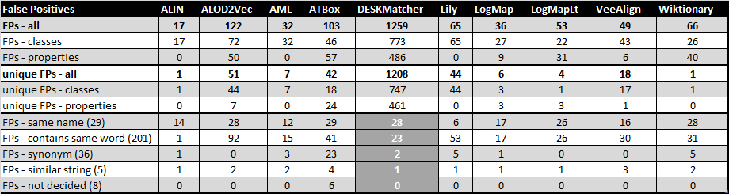
Additionally, a subset of FPs which includes only FPs generated based on the same name can be viewed here. It can be seen that such FPs were found by multiple tools in most cases and in some cases even by all the tools.
We provided our general suggestions why a mapping could have been found by a tool. One of the area of future improvement for the tools can be to provide explanations for the mappings they generate. Such explanation is already included be ALOD2Vec, DESKMatcher a Wiktionary. We compared their explanation with our suggestions and in most cases, the explanations correspond. An Excel sheet with this comparison can be downloaded here.
Compared to the last year's FP evaluation, we were not evaluating the reason why the FPs were incorrect mappings. We also narrowed down the "why was an alignment discovered" to 4 categories, eliminating the "structure" category. On the other hand, we added the comparison of "why was an alignment discovered" assigned by us with the explanation for the alignment provided by the system itself (for the 3 systems which generate explanations with the mappings). Looking at the systems in the last year's FP evaluation which were part of this year's FP evaluation, the results are similar. Most FPs generated by ALIN still have "same name" as the reason why they were discovered. AML, Lily, LogMAp, LogMapLt and Wiktionary still have different kinds. Just like last year, ALIN, AML, LogMap and LogMapLt have only few FPs which were not found by other systems, while Lily has many of its FPs which were not found by other systems. On the other hand, Wiktionary generated only 1 unique mapping this years while last year, it included many mappings not found by other tools. Looking at the systems which didn't participate last year (ALOD2Vec, ATBox, DESKMatcher and VeeAlign), most of their FPs were discovered because of containing the same word - this may or may not include DESKMatcher for which we didn't evaluate all of its mappings. ALOD2Vec and VeeAlign didn't generate any FPs which were discovered because of "synonyms". All four of these systems also generated a number of unique FPs.
The confidence values of all matches in the standard (sharp) reference alignments for the conference track are all 1.0. For the uncertain version of this track, the confidence value of a match has been set equal to the percentage of a group of people who agreed with the match in question (this uncertain version is based on reference alignment labeled ra1). One key thing to note is that the group was only asked to validate matches that were already present in the existing reference alignments - so some matches had their confidence value reduced from 1.0 to a number near 0, but no new matches were added.
There are two ways that we can evaluate alignment systems according to these ‘uncertain’ reference alignments, which we refer to as discrete and continuous. The discrete evaluation considers any match in the reference alignment with a confidence value of 0.5 or greater to be fully correct and those with a confidence less than 0.5 to be fully incorrect. Similarly, an alignment system’s match is considered a ‘yes’ if the confidence value is greater than or equal to the system’s threshold and a ‘no’ otherwise. In essence, this is the same as the ‘sharp’ evaluation approach, except that some matches have been removed because less than half of the crowdsourcing group agreed with them. The continuous evaluation strategy penalizes an alignment system more if it misses a match on which most people agree than if it misses a more controversial match. For instance, if A = B with a confidence of 0.85 in the reference alignment and an alignment algorithm gives that match a confidence of 0.40, then that is counted as 0.85 * 0.40 = 0.34 of a true positive and 0.85 – 0.40 = 0.45 of a false negative.
Below is a graph showing the F-measure, precision, and recall of the different alignment systems when evaluated using the sharp (s), discrete uncertain (d) and continuous uncertain (c) metrics, along with a table containing the same information. The results from this year show that more systems are assigning nuanced confidence values to the matches they produce.
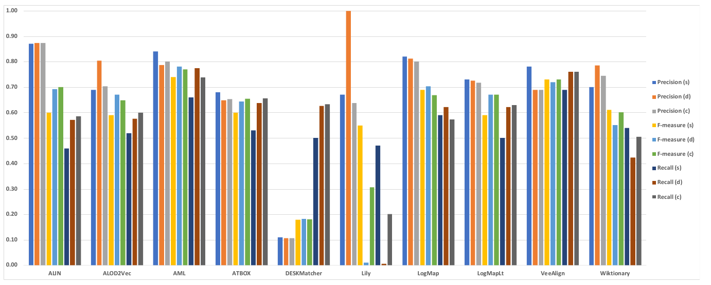
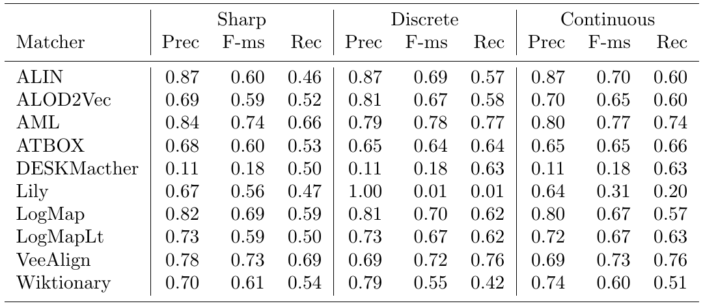
This year, out of the 10 alignment systems, three (ALIN, DESKMatcher, LogMapLt) use 1.0 as the confidence value for all matches they identify. The remaining 7 systems (ALOD2Vec, AML, ATBOX, Lily, LogMap, VeeAlign, Wiktionary) have a wide variation of confidence values.
When comparing the performance of the systems on the uncertain reference alignments versus that on the sharp version, we see that in the discrete case all systems except Lily performed the same or better in terms of F-measure (Lily’s F-measure dropped almost to 0). Changes in F-measure of discrete cases ranged from -1 to 15 percent over the sharp reference alignment. This was predominantly driven by increased recall, which is a result of the presence of fewer ’controversial’ matches in the uncertain version of the reference alignment.
The performance of the systems with confidence values always 1.0 is very similar regardless of whether a discrete or continuous evaluation methodology is used, because many of the matches they find are the ones that the experts had high agreement about, while the ones they missed were the more controversial matches. AML produces a fairly wide range of confidence values and has the highest F-measure under both the continuous and discrete evaluation methodologies, indicating that this system’s confidence evaluation does a good job of reflecting cohesion among experts on this task. Of the remaining systems, three (ALOD2Vec, AML, LogMap) have relatively small drops in F-measure when moving from discrete to continuous evaluation. Lily’s performance drops drastically under the discrete and continuous evaluation methodologies. This is because the matcher assigns low confidence values to some matches in which the labels are equivalent strings, which many crowdsourcers agreed with unless there was a compelling technical reason not to. This hurts recall significantly.
Six systems from this year also participated last year, and thus we are again able to make some comparisons over time. The F-measures of these six systems essentially held almost constant when evaluated against the uncertain reference alignments. The exception was Lily, whose performance in discrete case decreased dramatically. ALOD2Vec, ATBOX, DESKMacther, VeeAlign are four new systems participating in this year. ALOD2Vec’s performance increases 14 percent in discrete case and 11 percent in continuous case in terms of F-measure over the sharp reference alignment from 0.59 to 0.67 and 0.65 respectively, which it is mainly driven by increased recall. It is also interesting that the precision of ALOD2Vec increases 17 percent in discrete case over the sharp version. It is because ALOD2Vec assigns low confidence values to those pairs that don’t have identical labels, which might help to remove some false positives in discrete case. ATBOX perform slightly better in both discrete and continuous cases compared to sharp case in term of F-measure, which increases from 0.60 to 0.64 and 0.66 respectively. This is also mostly driven by increased recall. From the results, DESKMacther output low precision among three different versions of reference alignment in general because it assigns all matches with 1.0 confidence value even the labels of two entities have low string similarity. Reasonably, it achieves slightly better recall from sharp to discrete and continuous cases, while the precision and F-measure remain constant. VeeAlign’s performance stays mostly constant from sharp to discrete and continuous in term of F-measure.
For evaluation based on logical reasoning we applied detection of conservativity and consistency principles violations [2, 3]. While consistency principle proposes that correspondences should not lead to unsatisfiable classes in the merged ontology, conservativity principle proposes that correspondences should not introduce new semantic relationships between concepts from one of input ontologies [2].
Table below summarizes statistics per matcher. There are number of alignments (#Incoh.Align.) that cause unsatisfiable TBox after ontologies merge, total number of all conservativity principle violations within all alignments (#TotConser.Viol.) and its average per one alignment (#AvgConser.Viol.), total number of all consistency principle violations (#TotConsist.Viol.) and its average per one alignment (#AvgConsist.Viol.).
As last year only three tools (ALIN, AML and LogMap) have no consistency principle violation while seven tools have some consistency principle violations. Conservativity principle violations are made by all tools where five tools have low numbers, i.e. ALIN, AML, LogMap, LogMapLt and VeeAlign (less than 100). However, we should note that these conservativity principle violations can be "false positives" since the entailment in the aligned ontology can be correct although it was not derivable in the single input ontologies.
| Matcher | #Incoh.Align. | #TotConser.Viol. | #AvgConser.Viol. | #TotConsist.Viol. | #AvgConsist.Viol. |
|---|---|---|---|---|---|
| ALIN | 0 | 2 | 0.1 | 0 | 0 |
| ALOD2Vec | 10 | 427 | 20.33 | 229 | 10.9 |
| AML | 0 | 39 | 1.86 | 0 | 0 |
| ATBox | 10 | 192 | 9.6 | 52 | 2.6 |
| DESKMatcher | 13 | 895 | 74.58 | 391 | 32.58 |
| Lily | 5 | 100 | 6.67 | 43 | 2.87 |
| LogMap | 0 | 25 | 1.19 | 0 | 0 |
| LogMapLt | 5 | 96 | 4.57 | 25 | 1.19 |
| VeeAlign | 9 | 76 | 3.62 | 83 | 3.95 |
| Wiktionary | 7 | 133 | 6.65 | 27 | 1.35 |
Here we list ten most frequent unsatisfiable classes appeared after ontologies merge by any tool. Seven tools generated incoherent alignments.
ekaw#Industrial_Session - 7 ekaw#Contributed_Talk - 7 ekaw#Conference_Session - 7 ekaw#Camera_Ready_Paper - 7 edas#TwoLevelConference - 7 edas#SingleLevelConference - 7 edas#Conference - 7 cmt#Conference - 7 sigkdd#Conference - 6 sigkdd#ACM_SIGKDD - 6
Here we list ten most frequent caused new semantic relationships between concepts within input ontologies by any tool:
iasted#Record_of_attendance, iasted#City - 7 edas-iasted conference#Invited_speaker, conference#Conference_participant - 7 conference-sigkdd conference-ekaw iasted#Video_presentation, iasted#Item - 6 iasted-sigkdd conference-iasted iasted#Sponzorship, iasted#Registration_fee - 6 iasted-sigkdd iasted#Sponzorship, iasted#Fee - 6 iasted-sigkdd iasted#Session_chair, iasted#Speaker - 6 ekaw-iasted iasted-sigkdd iasted#Presentation, iasted#Item - 6 iasted-sigkdd conference-iasted iasted#PowerPoint_presentation, iasted#Item - 6 iasted-sigkdd conference-iasted iasted#Hotel_fee, iasted#Registration_fee - 6 iasted-sigkdd iasted#Fee_for_extra_trip, iasted#Registration_fee - 6 iasted-sigkdd
This year we conducted experiment of matching cross-domain DBpedia ontology to OntoFarm ontologies. In order to evaluate resulted alignments we prepared reference alignment of DBpedia to three OntoFarm ontologies (ekaw, sigkdd and confOf) as explained in [5].
This was not announced beforehand and systems did not specifically prepare for this. Out of 10 systems five managed to match dbpedia to OntoFarm ontologies (there were different problems dealing with dbpedia ontology): AML, DESKMacther, LogMap, LogMapLt, Wiktionary.
We evaluated alignments from the systems and the results are in the table below. Additionally, we added two baselines: StringEquiv is a string matcher based on string equality applied on local names of entities which were lowercased and edna (string editing distance matcher).
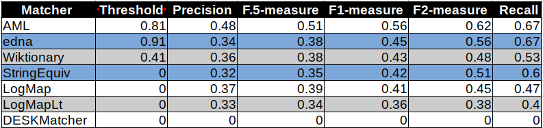
We can see the systems performs almost the same as two baselines except AML which dominates with 0.56 of F1-measure. Low scores of measures show that the corresponding test cases are difficult for traditional ontology matching systems since they mainly focus on matching of domain ontologies.
[1] Michelle Cheatham, Pascal Hitzler: Conference v2.0: An Uncertain Version of the OAEI Conference Benchmark. International Semantic Web Conference (2) 2014: 33-48.
[2] Alessandro Solimando, Ernesto Jiménez-Ruiz, Giovanna Guerrini: Detecting and Correcting Conservativity Principle Violations in Ontology-to-Ontology Mappings. International Semantic Web Conference (2) 2014: 1-16.
[3] Alessandro Solimando, Ernesto Jiménez-Ruiz, Giovanna Guerrini: A Multi-strategy Approach for Detecting and Correcting Conservativity Principle Violations in Ontology Alignments. OWL: Experiences and Directions Workshop 2014 (OWLED 2014). 13-24.
[4] Ondřej Zamazal, Vojtěch Svátek. The Ten-Year OntoFarm and its Fertilization within the Onto-Sphere. Web Semantics: Science, Services and Agents on the World Wide Web, 43, 46-53. 2018.
[5] Martin Šatra, Ondřej Zamazal. Towards Matching of Domain Ontologies to Cross-Domain Ontology: Evaluation Perspective. Ontology Matching 2020.